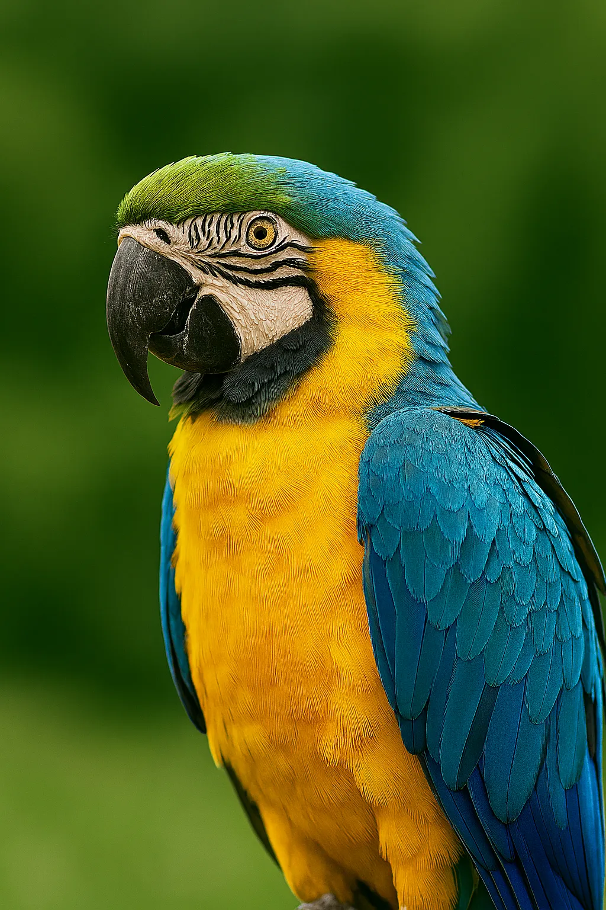
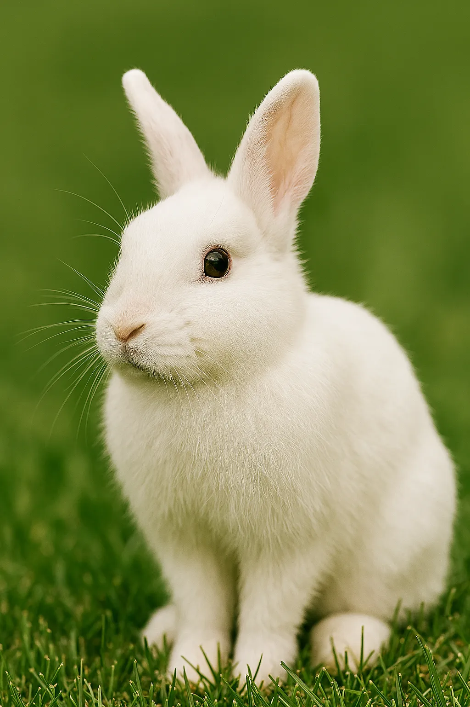

A FEW FRIENDLY FACES
A little gallery of happy things.
Illustrative images from the existing site library, not customer-submitted photos or adoption listings.

Curious cat

Bright bird

Gentle rabbit

Cosy comfort

A FEW FRIENDLY FACES
Illustrative images from the existing site library, not customer-submitted photos or adoption listings.

